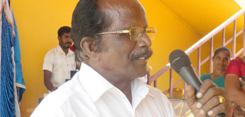
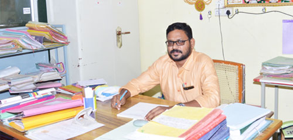

About Us

J.B. Matric. Hr. Sec. School, Kolathur is run by J.B. Educational trust, Kolathur. It was started in 1988 around 1000 students are studying 40 teaching staff amd 26 non-teaching staff are working under the able guidance of the founder Mr.Jayaraman, an excellent teacher awardee and the correspondent Mr.J.Thangavelan B.E.,MBA. There are 12 buses for transport facilities. Well equipped science labs, digital library, smart classes and kids park are also available at the school premises. Special care to each and every student is given by our teachers. Our students are motivated to read and write consequently to present their thoughts in their own sentences. Frequent moral classes are also given to our children. Besides inculcating the talents in the field of curricular activities, extracurricular activities like Sports, Yoga, Karate and dance are given importance. Hostel facilities is also available for the students with the motto “ Home away from home” Hygienic food & R.O water plant(2000 lit) is installed to supply purified water. To bring out the talents of the children, we conducted science exhibition, drawing competition, essay competition, elocution competition etc., Industrial visits are also arranged for the students for the betterment of children, an efficient interaction is brought about between parents and teachers by the way of monthly parents-teachers meeting. We are working hard to bring out every child as successful personalities.
Vision & Mission
Vision
J.B. School aims to be an institution of excellence, among the best in the country dedicated to producing citizens with values.Mission
To fulfill the vision the school provides an environment where every student can realize his fullest potentialBy emphasizing Global awareness, Environmental consciousness, Social responsibility and Ethics.
By adopting a strong work culture that focuses on quality, Undermines waste of time, material, space and manpower.
By following a Code of Conduct that is Polite, Positive, Prepared, Punctual, and Progressive.
By living up to the high ideals as set by the visionary educationist J.B. School.

Founder
Correspondent
